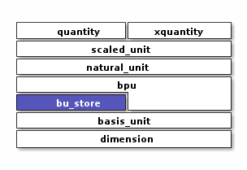

Basis Unit Store
#include <xo/unit/bu_store.hpp>
namespace bu = xo::qty::detail::bu;
A xo::qty::bu_store is a small, constexpr, key-value store associating
abbreviations with basis units. To satisfy the constexpr requirement,
all unit abbreviations are irrevocably established from bu_store’s constructor.
The constant bu_abbrev_store contains a single instance of bu_store,
recording all built-in units along with their associated abbreviations
![map mass_table<<bu_dim_store>> {
bu::milligram => "mg"
bu::gram => "g"
bu::kilogram => "kg"
}
map distance_table<<bu_dim_store>> {
bu::millimeter => "mm"
bu::meter => "m"
bu::kilometer => "km"
}
map time_table<<bu_dim_store>> {
bu::millisecond => "ms"
bu::second => "s"
bu::minute => "min"
bu::hour => "hr"
}
object bu_abbrev_store<<bu_store>>
bu_abbrev_store : bu_abbrev_vv[dim::mass] = mass_table
bu_abbrev_store : bu_abbrev_vv[dim::distance] = distance_table
bu_abbrev_store : bu_abbrev_vv[dim::time] = time_table
bu_abbrev_store o-- mass_table
bu_abbrev_store o-- distance_table
bu_abbrev_store o-- time_table](_images/plantuml-e375399355d8164dfb6a814483ddb9e508116b9c.png)
basis-unit store
This class exists to support the implementation of natural_unit::abbrev().
Application code is not expected to interact directly with it.
Class
-
class bu_store
associate basis units with abbreviations
For example, this would be possible:
#include <xo/unit/bu_store.hpp>
namespace bu = using xo::qty::detail::bu;
using xo::qty::detail::bu_store;
using xo::qty::dim;
using xo::flatstring;
constexpr bu_store store;
static_assert(store.bu_abbrev(bu::minute) == flatstring("min"));
static_assert(store.bu_abbrev(bu::microgram) == flatstring("ug"));
Warning
doxygengroup: Cannot find group “bu-store-constructors” in doxygen xml output for project “xodoxxml” from directory: /home/roland/proj/xo/xo-unit/.build-ccov/docs/dox/xml
Warning
doxygengroup: Cannot find group “bu-store-access-methods” in doxygen xml output for project “xodoxxml” from directory: /home/roland/proj/xo/xo-unit/.build-ccov/docs/dox/xml
Warning
doxygengroup: Cannot find group “bu-store-implementation-methods” in doxygen xml output for project “xodoxxml” from directory: /home/roland/proj/xo/xo-unit/.build-ccov/docs/dox/xml
-
class bu_dim_store
store basis-unit abbreviations for a particular dimension
- group bu-dim-store-type-traits
Typedefs
-
using entry_type = std::pair<scalefactor2x_ratio_type, bu_abbrev_type>
-
using native_scale_v = std::array<entry_type, max_bu_per_dim>
-
using entry_type = std::pair<scalefactor2x_ratio_type, bu_abbrev_type>
- group bu-dim-store-instance-vars
Constants
Provides dictionary of unit abbreviations
Application code is not expected to interact directly with bu_abbrev_store.
Functions
-
constexpr bu_abbrev_type xo::qty::bu_abbrev(const basis_unit &bu)
get abbreviation for basis-unit
bu
For example:
#include <xo/unit/bu_store.hpp>
namespace bu = xo::qty::bu;
using xo::qty::bu_abbrev;
using xo::flatstring;
static_assert(bu_abbrev(bu::kilogram) == xo::flatstring("kg"));